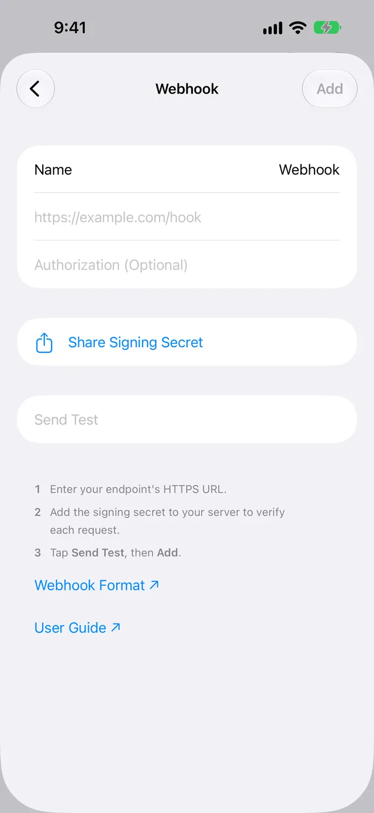
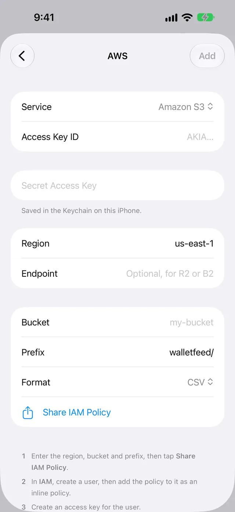
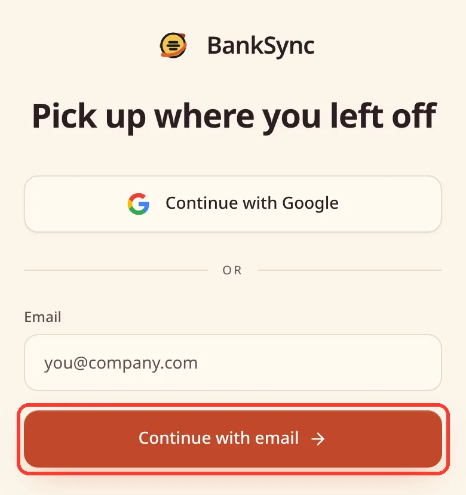

Send Apple Card transactions to your app or server
There is no web API for your Apple Card transactions. Apple lets an app on your iPhone read them with the FinanceKit API, but only after you give the app access.
Download WalletFeed on the App Store
WalletFeed is an iPhone app that reads your Apple Card, Apple Cash and Savings transactions with FinanceKit. With WalletFeed Pro, it sends each change from your iPhone to your server, AWS, Supabase or BankSync.
FinanceKit on iPhone
FinanceKit is the part of iOS that lets apps read data from Wallet. It is available only on iPhone. In the US, FinanceKit gives apps access to your Apple Card, Apple Cash and Savings accounts.
Before an app can read your data, iOS shows your Wallet accounts. You select the accounts that the app can read, and a start date for each account. You can change the accounts and the start dates in the Settings app, in Privacy & Security › Wallet.
Apple has no bank feed for your Apple Card transactions.
If you make an iPhone app, your app must have the FinanceKit entitlement from Apple. Apple gives this entitlement only to an iPhone app in the Finance category of the App Store in the US or the UK. Apple also tells developers that the app must "provide financial management tools". For more information, refer to FinanceKit on the Apple Developer site.
Destinations for your app or server
WalletFeed can send your transactions to the destinations in this table.
| Destination | Data that it receives |
|---|---|
| Webhook | One JSON event in each POST request to your HTTPS URL, for example transaction.created. You select the events with switches. |
| Amazon S3 | One CSV or JSON Lines file for each month, in your bucket |
| Amazon SQS | One message for each change |
| Kinesis Data Streams | One record for each change |
| DynamoDB | One item for each transaction |
| EventBridge | One event for each change |
| Supabase | One row for each transaction, in a Postgres table in your Supabase project |
| BankSync | One row for each transaction, in a BankSync table that your AI agents can read |
In the Add Destination list, Amazon S3, Amazon SQS, Kinesis Data Streams, DynamoDB and EventBridge are all in AWS. You can add more than one destination.
These pages give all the steps for each destination:
- Send Apple Card transactions to a webhook
- Send Apple Card transactions to AWS
- Send Apple Card transactions to Supabase
- Send Apple Card transactions to BankSync.
Before you start
You must have:
- An iPhone with iOS 26 or a newer version
- WalletFeed on that iPhone
- WalletFeed Pro, a subscription with a 1-week free trial, or a one-time Lifetime purchase
- For a webhook, a server with an HTTPS URL that your iPhone can connect to from the internet
- For AWS, an AWS account in which you can make an IAM user and an access key
- For Supabase, a Supabase project
- For BankSync, a BankSync workspace in which you are the owner or an admin.
WalletFeed is available only in the US.
Step 1: Give WalletFeed access to your Wallet accounts
If WalletFeed shows your transactions, go to Step 2.
-
On your iPhone, open WalletFeed.
-
On the Welcome to WalletFeed screen, tap Continue. iOS shows your Wallet accounts.

-
Select the accounts that WalletFeed can read.
-
For each account, select the start date of the transactions that WalletFeed can read.
-
Tap Share. The Transactions tab shows the transactions of the accounts that you selected.
If WalletFeed shows No Cards, tap Choose Accounts. iOS shows your Wallet accounts. Then do steps 3 thru 5. For more information, refer to Select the Wallet accounts that WalletFeed reads.
Step 2: Add the destination
-
Tap Destinations at the bottom of the screen.
-
Tap + at the top of the screen.

-
Find the destination in the Add Destination list, or type its name in the search field.

The Developers section has Webhook and AWS. Supabase is in Sheets & Databases, and BankSync is in Budgeting.
-
Tap the destination.
-
If WalletFeed shows WalletFeed Pro, get WalletFeed Pro. Then WalletFeed shows the screen of the destination.
Step 3: Connect the destination
Do the steps for your destination. WalletFeed keeps the keys, the secrets and the webhook URL in the Keychain on your iPhone.
Webhook
-
To change the name of the destination, type a different name in Name.

-
Type the HTTPS URL of your server in the field that shows
https://example.com/hook. -
If your server must get an
Authorizationheader, type its value in Authorization (Optional). -
Tap Share Signing Secret. iOS shows a menu with Copy.
-
Tap Copy, or send the secret to your computer, for example with AirDrop.
-
Add the secret to your server.
-
Set the switches in the Transactions and Accounts sections.
New, Changed, Removed and History are on. The four switches under Accounts are off. To also send the balance of each account, set Balances to on.
-
Tap Send Test. If more than one switch is on, WalletFeed shows a menu with one item for each switch that is on. Tap an item. Your server receives one request with a test event, for example
transaction.createdwith one test transaction. The request has"livemode": false. -
Tap Add. Add does not operate if all switches are off.
WalletFeed uses Standard Webhooks signatures. Your server uses the secret to make sure that WalletFeed sent each request. For the JSON fields and the signature, refer to Webhook format.
AWS
For DynamoDB, the table must have a String partition key with the name id, and no sort key.
WalletFeed accepts only the access key of an IAM user. It does not accept an access key that has a session token.
-
In Service, select Amazon S3, Amazon SQS, Kinesis Data Streams, DynamoDB or EventBridge.

-
If the AWS region of your service is not
us-east-1, type the region in Region. -
For Cloudflare R2, Backblaze B2 or a different service that uses the S3 API, type its URL in Endpoint.
-
Type the value for your service in Bucket, Queue URL, Stream, Table or Event Bus.
-
Tap Share IAM Policy.
-
Send the policy to your computer, for example with AirDrop.
-
On your computer, open IAM in the AWS console.
-
Make an IAM user that has the policy from WalletFeed.
-
Make an access key for the user.
-
Send the access key ID and the secret access key to your iPhone, for example with AirDrop.
-
In WalletFeed, paste the access key ID in Access Key ID.
-
Paste the secret access key in Secret Access Key.
-
Tap Add. WalletFeed does a test before it adds the destination.
For the test, WalletFeed writes and deletes a test file in S3. For DynamoDB, WalletFeed makes sure that the table has the correct partition key. SQS, Kinesis Data Streams and EventBridge receive one test event.
Supabase
-
In your Supabase project, click Connect.
-
In "Connect to your project", click Server.
-
If you use a computer, send the project URL and the key to your iPhone, for example with AirDrop.
-
Copy the publishable key from the
SUPABASE_PUBLISHABLE_KEY=row. The key starts withsb_publishable_. -
In WalletFeed, paste the key in Publishable Key.

-
Copy the project URL from the
SUPABASE_URL=row. -
In WalletFeed, paste the project URL in the field below Publishable Key. When this field is empty, it shows
https://abcd.supabase.co. -
Tap Share SQL.
-
Tap Copy, or send the SQL to your computer, for example with AirDrop.
-
Paste the SQL in the SQL Editor of your Supabase project.
-
Click Run.
-
Click Run query.
-
In WalletFeed, tap Add.
The SQL makes the table walletfeed_transactions. It also adds a policy that lets only this destination read and write the table. When you tap Add, WalletFeed makes sure that the table has the SQL from this form. WalletFeed does not accept a secret key, which starts with sb_secret_.
A new project has a publishable key with the name default. If the project has no publishable key, make a key in Project Settings › API Keys with New publishable key.
BankSync
-
Tap Sign In with BankSync.

-
On the BankSync page, tap Continue with Google, or type your e-mail address in Email.

-
If you typed your e-mail address, tap Continue with email.
-
If BankSync has no account for your e-mail address, do the steps on the BankSync page to make an account.
-
On the BankSync page, give WalletFeed access to your BankSync workspace. BankSync makes the Apple Card table, and WalletFeed shows Signed In.
Only the owner or an admin of the workspace can give this access.
-
Tap Add.
On the Free plan, a workspace can have only one table. If the workspace has a different table, BankSync cannot make the Apple Card table. As a result, WalletFeed shows Try Again and Open BankSync.
You can also tap Use an API Key Instead. API keys are available only on BankSync's Standard plan or a higher plan. In BankSync, the keys are in Settings › Developers › API Keys. Send Apple Card transactions to BankSync gives the steps for an API key.
Step 4: Start to send transactions
After you tap Add, WalletFeed shows a message before it sends data. The message tells you the data that the destination will receive. It also gives the accounts and the start date. For a webhook, the title of the message is "Send Transactions to Your Server?" If all switches under Transactions are off, the title is "Send Account Data to Your Server?"
- Read the message.
- Tap Send. WalletFeed adds the destination and starts to send your transactions.
If you tap Cancel, WalletFeed does not add the destination.
Transaction data
Each destination receives this data for a transaction:
- An ID that stays the same when the transaction changes
- The account name, for example Apple Card
- The date, the currency and the value of the transaction
- The description, the merchant name and the merchant category code (MCC), if Wallet has them
- The WalletFeed category, for example groceries or travel
- The status in Wallet, for example
pendingorbooked - For a charge in a different currency, the value in that currency.
This table gives the value of a charge at each destination. It also tells you the result when Wallet removes a transaction.
| Destination | Value of a charge | Removed transaction |
|---|---|---|
| Webhook | A number less than zero, with direction set to debit |
WalletFeed sends a transaction.deleted event with the ID of the transaction in data.id. |
| Amazon S3 | A number less than zero | WalletFeed writes the file of the month again, without the transaction. |
| Amazon SQS, Kinesis Data Streams, EventBridge | A number less than zero | WalletFeed sends an event with event set to deleted and only the id. |
| DynamoDB | A number less than zero | WalletFeed deletes the item. |
| Supabase | A number less than zero | WalletFeed deletes the row. |
| BankSync | A number less than zero | WalletFeed deletes the row, and BankSync moves the row to the BankSync trash. |
If you do not change Prefix or Format, the S3 file for October 2026 is walletfeed/transactions/2026-10.csv.
In EventBridge, the source of each event is app.walletfeed. The detail-type is Transaction Created, Transaction Updated or Transaction Deleted.
WalletFeed has no account, and no WalletFeed server keeps your transactions or keys. Your transactions go from your iPhone directly to your server or service. After a service receives your transactions, the terms of that service are applicable to them.
New and changed transactions
- While WalletFeed is open, a destination receives changes in seconds.
- When WalletFeed is not open, iOS starts WalletFeed approximately 1 hour or less after a change in Wallet. If Background Sync is on in Settings › Sync, WalletFeed then sends the change. Background Sync is on until you set it to off.
- A pending charge has the status
pendingorauthorized. When the status changes tobooked, the destination receives the transaction again, with the same ID and the value of thebookedtransaction. - WalletFeed removes declined charges, expired charges and the transactions that Wallet removes.
- A refund is a different transaction. Its type is
refund. - For a webhook, your server must send a status code from 200 to 299. If not, WalletFeed sends the event again the next time that it sends data. Refer to Webhook format.
Send previous transactions
A new destination also receives previous transactions from the start date in Settings › Sync › Initial History. Initial History is All until you change it. WalletFeed sends the newest transactions first.
To send previous transactions again, use Send History:
- In WalletFeed, tap Destinations.
- Tap the destination.
- Tap Send History.
- Tap 30 Days, 90 Days, 1 Year or All.
While WalletFeed sends the history, you can stop Send History:
- Tap Send History.
- Tap Stop Sending.
WalletFeed can send only the transactions that iOS lets it read. To let WalletFeed read more previous transactions, change the start date in the Settings app, in Privacy & Security › Wallet › WalletFeed.
Change or remove the destination
- In WalletFeed, tap Destinations.
- Tap the destination.
Then do one of these steps:
- To send only some transactions, set Filter to on (refer to Choose what a destination receives).
- To stop the destination for a time, set Enabled to off.
- To change the URL or the
Authorizationvalue of a webhook, tap URL or Authorization. - To use a new AWS access key, Supabase key or BankSync API key, tap Replace Key.
To remove the destination:
- Tap Delete. WalletFeed shows the message "Transactions already sent stay at the destination."
- Tap Delete again.
To remove the transactions that WalletFeed sent, delete them on your server or in the service.
If there is a problem
If WalletFeed shows "Wallet Access Off"
WalletFeed cannot read Wallet, because you tapped Don't Share or you stopped its access in the Settings app.
- On your iPhone, open the Settings app.
- Tap Privacy & Security › Wallet › WalletFeed.
- Select the accounts that WalletFeed can read.
- Open WalletFeed.
If WalletFeed does not show your Apple Card transactions
You did not select your Apple Card when iOS showed your Wallet accounts, or you are a participant in Apple Card Family. FinanceKit does not give participants access to the Apple Card account.
To select your Apple Card:
- On your iPhone, open the Settings app.
- Tap Privacy & Security › Wallet › WalletFeed.
- Select your Apple Card.
- Open WalletFeed.
If the destination shows "Authentication failed"
Your server or the service did not accept the key, the Authorization value or the access from Sign In with BankSync. The HTTP status code was 401 or 403.
-
In WalletFeed, tap Destinations.

-
Tap the destination.

For a webhook, do these steps:
- Tap Authorization.
- Type the correct value.
- Tap Save.
- Tap Send Test.
For AWS, do these steps:
- Tap Replace Key.
- Paste the access key ID in Access Key ID.
- Paste the secret access key in Secret Access Key.
- Tap Replace.
- Tap Send Test.
For Supabase or a BankSync API key, do these steps:
- Tap Replace Key.
- Paste the correct key.
- Tap Replace.
- Tap Send Test.
For Sign In with BankSync, do these steps:
- Tap Sign In Again.
- Tap Send Test.
If the destination shows "Can't connect"
WalletFeed did not get a response from your server or the service.
- Make sure that your iPhone can connect to the internet.
- For a webhook, make sure that your server operates and that it accepts HTTPS requests.
- In WalletFeed, tap Destinations.
- Tap the destination.
- For a webhook, make sure that the URL in the URL row is correct.
- Tap Send Test.
If the AWS screen shows "Wrong region for this bucket."
The S3 bucket is in a different AWS region.
- In Region, type the region of the bucket.
- Tap Add.
If the AWS screen shows "Key rejected"
AWS did not accept the access key, or the IAM policy of the user is not correct.
- On your computer, open IAM.
- Make sure that the user has the policy from Share IAM Policy.
- In WalletFeed, paste the access key ID in Access Key ID again.
- Paste the secret access key in Secret Access Key again.
- Tap Add.
If your software receives an event two times
SQS, Kinesis Data Streams and EventBridge can receive the same event again. This occurs when WalletFeed sends the same changes again. A FIFO queue in SQS removes the second copy of an event if the queue receives it 5 minutes or less after the first copy.
- In the software that reads the events, identify each transaction by its
id. - If an event has the same
eventandstatusas the last event for thatid, discard the new event.
 Scan with your iPhone
Scan with your iPhone
Related
Updated November 16, 2026